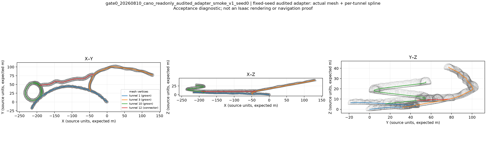
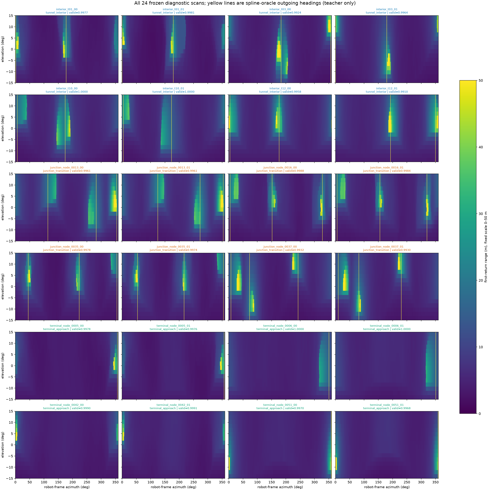
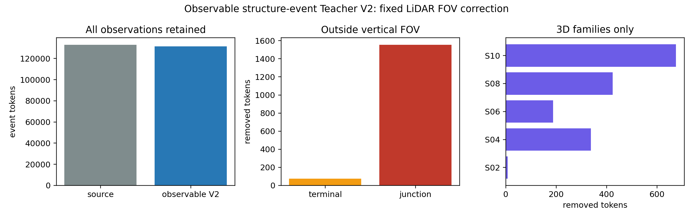
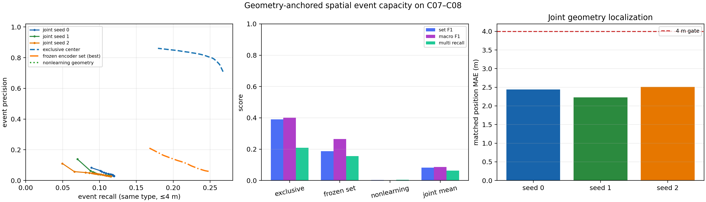
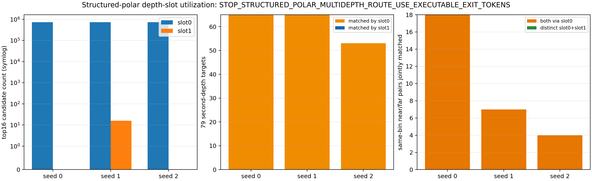
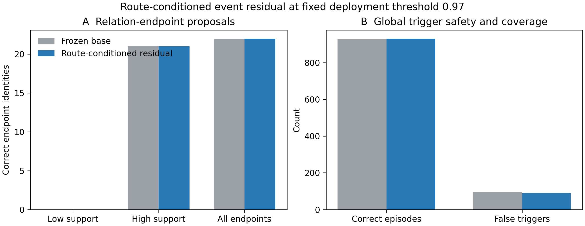

1. 当前结论
数据与自动标注
V2R5 基线
主方法与拓扑图
2. 先把报告里的名词说清楚
| 报告里的词 | 直接理解成什么 | 在本项目中的具体含义 |
|---|---|---|
| LiDAR（激光雷达） | 机器人用激光量周围障碍物距离 | 每帧是 16 条竖直扫描线 × 720 个水平方向，共 11,520 个距离值。 |
| Teacher（教师/自动标注器） | 训练时提供标准答案的程序 | 它不是另一个神经网络，而是读取程序化地图真值，自动算出出口、宽高、坡度、曲率和事件标签。 |
| Student（学生模型） | 真正要训练和部署的网络 | 训练与实际运行时只能看 LiDAR，不能看到地图真值。 |
| TNG（真实拓扑网络图） | 地下隧道的标准答案骨架图 | 节点表示路口或端点，边表示物理隧道；只用于生成标签和评价。 |
| spline（样条中心线） | 一条平滑的隧道中心线 | 用来确定机器人在隧道中的位置、朝向、行程、坡度和弯曲程度。 |
| mesh（三角网格） | 真正用于激光碰撞的三维洞壁表面 | 激光射线打到 mesh 后得到距离；横截面射线还给出实际宽度和净空。 |
| directed traversal（有向穿越） | 沿一条隧道从一端走到另一端 | 同一条物理边正向、反向各保留一次，用来验证事件是否与行驶方向无关。 |
| token（出口条目） | 模型认为存在的一个出口 | 包含出口方向、开口宽度、竖直轮廓、置信度和跨帧对应关系。 |
| Composer（结构组合器） | 把多个几何证据组合成结构事件的模块 | 例如“前方出口消失 + 左右出现两个稳定出口”组合成路口证据。 |
| identity（物理身份） | 同一个真实路口/转弯的唯一编号 | 避免把一个路口附近连续十几帧错误地当成十几个独立事件。 |
| seed（随机种子） | 一次独立训练的随机初始条件 | 使用 0/1/2 三次训练，检查结果是否稳定而非偶然。 |
| F1 / AUC / MAE | 分类综合分数 / 排序能力 / 平均数值误差 | F1、AUC 越高越好；MAE 越低越好。报告中的失败结论都对应这些可复核指标。 |
3. 论文目标与方法主链
激光雷达
通道度量几何
组合器
拒绝关联
提交边
驱动探索
创新要求不是“多预测几个属性”，而是证明出口关系、宽度、高度、坡度和曲率真正参与节点生成与关联。若最终节点仍由隐藏分类特征直接决定，方法与“仿 Cano 的出口感知 + 规则建图”没有足够区别。
最终部署时的输入只有机器人走到当前时刻为止的五帧激光。网络先还原局部几何，再把这些几何量组合成结构事件。事件可以提出一个图节点，但两个节点之间的边必须等机器人真实走通过以后才能写入图中，这样可避免模型凭空想象一条可通行隧道。
已经能不能建图？能，但旧图不是论文主方法

| 早期纵向原型结果 | 数值 | 能说明什么 | 不能说明什么 |
|---|---|---|---|
| 出口检测 F1 | 0.7503 | 单世界内，激光确实包含出口方向信号。 | 不能证明跨世界泛化。 |
| 图节点 F1 | 0.8276 | 出口事件可以驱动节点写入在线图。 | 不能证明学到了宽度、坡度、曲率等结构语义。 |
| 直接几何边 F1 | 0.94 | 真实穿越后建立边的接口可行。 | 不能替代严格未见拓扑和闭环探索实验。 |
4. 地下数据集是怎样生成的
4.1 先生成 100 个互不相同的程序化地下世界
数据不是从一张固定矿图反复截帧。我们先使用 Cano 的程序化地下环境生成器，按十种结构难度生成 100 个不同的拓扑母世界。十种结构同时覆盖平面/三维、树状/带环、小型/中型、分支丰富/复杂等情况；每种结构有 C01--C10 十个独立实例。
- 先生成抽象 TNG：确定有多少节点、哪些节点相连、哪些是端点、路口和环路；
- 把每条 TNG 边变成三维平滑中心线，加入高度变化、坡道和弯曲；
- 沿中心线生成具有半径和粗糙表面的隧道点云与三角网格；
- 检查图、中心线、网格之间是否一一对应，并固定随机种子与文件哈希；
- 按世界身份而不是按帧随机切分，防止同一地下结构同时出现在训练和测试中。


4.2 沿每条隧道正反两个方向采样
每条物理边都生成两个有向穿越：A→B 和 B→A。沿真实行程每 1 m 放置一帧传感器位姿，连续五帧组成一个因果样本。一个样本覆盖当前帧以及前面 4 m 的历史，绝不引用未来帧。
# 与实际实现一致的核心采样逻辑（为便于阅读删去异常检查）
first_current_position = (history_frames - 1) * spacing_m # 4 m
current_positions = arange(first_current_position, tunnel_length, 1.0)
for current in current_positions:
sequence = [current - 4, current - 3, current - 2,
current - 1, current] # 只看过去到现在
代码里的 current 是沿中心线走过的米数。第一组样本是 0、1、2、3、4 m 五帧；第二组是 1、2、3、4、5 m。重叠帧在磁盘中只保存一次，序列只保存引用，因此不会把同一帧重复射线计算和重复占盘。
4.3 用三维网格模拟激光雷达
在每个采样位姿发射固定的理想激光：16 个竖直角度、720 个水平角度、量程 0.3--50 m，每条射线只记录第一次撞到洞壁的位置。模型输入只保存距离和有效标记，不保存 TNG 节点号、隧道编号、世界名或未来轨迹。


唯一激光帧
五帧序列
完整射线
可见出口条目
这里的 90 个世界表示“已经生成并封存传感器数据”，不等于当前训练全部使用。当前结构方法只读取 C01--C08 的 80 个世界；C09 数据保持封存，C10 从未进入这次导出。
数据导出证据：去重数据集统计摘要。
5. 自动标注器（Teacher）到底是什么、怎样生成
它不是外部模型，也不是人工标注器，而是程序化地下世界的自动答案系统，来源包括：
- 真实拓扑网络图（TNG）：真实节点、边、节点连接数、隧道和出口身份；
- 样条中心线：隧道中心线、真实行程、坡度和曲率；
- 三角网格与几何参数：宽度、高度、净空和激光遮挡；
- 有向穿越：机器人正向或反向经过每条边的真实顺序与弧长位置。
自动标注器沿真实穿越生成五帧因果序列的标准答案：可见出口、通道几何、结构事件以及物理身份。学生模型训练和部署时只读激光；真实拓扑图、中心线、三角网格、世界名和物理身份只用于监督和事后评价。
5.1 一帧标准答案的生成过程
- 定位：根据有向穿越的弧长，在 spline 上插值得到当前三维位置和前进切线。
- 测局部几何：在当前点前后各取一段中心线算坡度和曲率；再从传感器位置向左右、上下发射网格射线，得到真实宽度与高度。
- 找出口：只查看当前 TNG 节点相连的物理边，把它们投到机器人坐标系，随后用 mesh 射线检查开口是否真的可见。
- 定事件：邻近度数≥3的节点标为路口；邻近度数=1的节点标为终点；中心线方向明显变化标为转弯；宽高发生持续变化标为几何变化；其余为普通走廊。
- 定身份：同一真实节点在不同位置、方向和重访中使用同一 identity；相似但不同的平行隧道明确作为困难负样本。
# Teacher 的事件优先级，改写自实际实现
if near_node and node.degree >= 3:
event = "路口" # junction
elif near_node and node.degree == 1:
event = "终点" # terminal
elif sustained_width_or_height_change:
event = "几何变化" # geometry-transition
elif heading_change_deg >= 15:
event = "转弯" # turn
else:
event = "普通走廊" # corridor
路口和终点优先，是因为一个路口附近可能同时存在宽度变化或弯曲；如果重复贴多个互相冲突的标签，模型无法知道哪个事件应该生成图节点。修正版会保留物理节点事件，并记录被压制的变化标签供审计。
5.2 宽度、高度、坡度和曲率如何计算
| 标签 | 生成依据 | 模型部署时如何估计 |
|---|---|---|
| 局部轴线 | spline 前后采样点之差并归一化 | 从五帧激光的走廊方向预测 |
| 宽度 | 垂直于中心线向左右洞壁做 mesh raycast | 从左右激光边界与出口遮挡预测 |
| 高度/净空 | 传感器向上、向下与竖直剖面 raycast | 从 16 层竖直扫描轮廓预测 |
| 坡度 | 局部轴线 z 分量的反正弦 | 由多帧竖直轮廓和地面/顶板变化预测 |
| 曲率 | 前后切线夹角除以中心线长度 | 由多帧方位结构和走廊方向变化预测 |
| 出口 | TNG incident edge 给候选，mesh 视线检查给可见性 | 由圆周距离图输出最多 6 个出口条目 |
# 实际几何公式的可读版本
axis = normalize(point_ahead - point_behind)
slope_deg = degrees(asin(axis.z))
heading_change = angle(current - point_behind,
point_ahead - current)
curvature_per_m = radians(heading_change) / local_path_length
width_m = distance_to_left_wall + distance_to_right_wall
height_m = distance_to_floor + distance_to_ceiling
5.3 Teacher 与模型之间的隔离
Teacher 能看到完整地图，是因为它只负责离线出题；学生模型不能看到这些字段。实际打包代码把标准答案与输入分开存放，并用有效掩码表示“这一项能否可靠监督”。核心边界如下：
训练输入：5 × (16 × 720 距离值 + 有效标记)
训练目标：事件类别、宽/高/坡度/曲率、出口集合、关联身份
禁止输入：TNG、节点度数、edge/tunnel identity、world 名、未来帧、GT pose
所以 Teacher 并不是部署时的作弊模块。部署时它完全不存在；网络必须仅凭激光预测 Teacher 当初生成的答案。
开发世界
有向穿越
自动标注观测
结构物理身份
变化物理身份
关联监督对
5.4 为什么需要修正版因果自动标注
旧标注会把一个变化点前后较宽的区域全部标成变化，其中部分早期帧必须依赖未来信息才能知道答案，也会把一个物理事件的相邻帧放大成大量样本。修正后：
- 只能使用当前和过去帧确认事件；
- 变化必须持续存在并在正反穿越中一致；
- 延迟确认后沿已执行轨迹回投到真实位置；
- 以物理身份评价覆盖，不只看帧数。
封存结果为 通过，没有训练更新，也没有读取严格测试世界。证据：统计摘要、SHA-256 完整性校验。


6. 当前训练数据划分
| 划分 | 世界 | 五帧观测 | 用途 |
|---|---|---|---|
| C01--C06 | 60 | 142,184 | 模型参数训练 |
| C07 | 10 | 21,548 | 模型权重、校准和阈值选择 |
| C08 | 10 | 24,394 | 一次零适配开发迁移评价 |
| C09/C10、M-TARE | 冻结 | 0 | 方法和阈值冻结前禁止读取 |
完整去重数据约含 285,000 个唯一激光帧和 212,000 个五帧因果序列。论文同时报告世界、轨迹、帧与物理身份，避免把相邻帧误称为独立样本。
7. 采用过的方法、原理与实验结论
| 方法 | 核心原理 | 主要结果 | 结论 |
|---|---|---|---|
| 出口方向与多任务结构基线 | 圆周 range-image CNN 预测出口方向、数量和结构 role。 | 常见出口与路口有明显信号；local axis 因 route-aligned 采样接近常数前向。 | 不能作主方法 与 Cano 边界接近，隐藏事件头旁路几何。 |
| 自由 query 空间事件集合 | 一次输出最多 16 个带类型和三维位置的事件，集合匹配处理多事件。 | 三 seed F1=`0.130/0.186/0.144`，低于旧基线 `0.391`；匹配 MAE 约 `2.49--2.63 m`。 | 科学失败 位置可回归，但候选覆盖不足。 |
| 几何锚定候选（Geometry-Anchored） | 候选锚定 LiDAR 可见距离与方位，联合训练位置、存在性和类型。 | 3D MAE=`2.23--2.51 m`，但 F1 仅 `0.086/0.093/0.069`；约 29,000 个目标无 4 m 内候选。 | 科学失败 自由 query 机制错误，不是阈值问题。 |
| 结构化极坐标候选（Polar Proposal） | 按 180 个方位 bin 与两个径向槽产生候选，再预测局部残差和几何。 | 解决空间锚定和可观测支持；复杂 cardinality 与稀有 objectness 仍不稳定。 | 部分保留 polar 表示保留，事件机制淘汰。 |
| 路线条件小型修正头（Route-Conditioned） | 冻结 ActionSet，只训练 643 参数 residual，加入路线出口流和几何汇总。 | 正确 episode `928→931`，false trigger `94→90`；关键端点仍 `0/2`，图 node recall `0.704→0.675`。 | 科学失败 普通样本略改善，关键结构更差。 |
| 稠密跨帧关系预测 | 所有相邻方位 pair 预测 persistent、reveal、withdraw。 | reveal/withdraw 正例率约 `0.013%`，dense BCE 极不平衡；方向误差退化到约 83°。 | 机制失败 转为稀疏 token transport。 |
| V2R5 稀疏圆周出口关系传递 | 每帧最多 6 个 token，显式 count、几何、不确定性、transport/dustbin/reveal 与 descriptor。 | 三次训练全部完成；C07/C08 事件宏平均 F1 为 0.641/0.590，几何相对改进仅 4.4%/7.8%，低于预注册的 10%。 | 科学失败 系统正常，作为组件基线和失败消融保留。 |
7.1 我们不是盲目换模型：方法选择的完整证据链
实验 A：先验证“只识别出口”是否已经足够
| 研究假设 | 如果模型能稳定识别出口方向和数量，配合固定规则就可能得到可靠拓扑图。 |
|---|---|
| 实验怎么做 | 把 16×720 激光距离图送入圆周卷积网络，预测出口方位、出口数量以及普通走廊/路口/终点；同时保留纯射线几何规则作为对照。 |
| 观察到什么 | 常见路口和出口方向可以识别，单世界原型也能建出图；五种固定拓扑上的几何规则出口 F1 达到 0.9143。 |
| 为什么仍不采用 | 它回答的是“哪里有开口”，不是“这里的通道宽度、净空、坡度、曲率发生了什么结构变化”。节点仍由出口数量/隐藏分类结果触发，与 Cano 的方法边界高度重合，创新不足。 |
| 保留什么 | 保留圆周激光编码器、出口方向模型、规则图和旧在线图，作为 Cano-like 基线及后续消融。 |
实验 B：让网络直接输出三维结构事件
| 研究假设 | 像目标检测一样使用多个自由查询槽位，网络可以直接找出路口、终点、转弯和几何变化的位置。 |
|---|---|
| 实验怎么做 | 每个五帧序列输出最多 16 个“事件候选”，每个候选含事件类别和三维坐标；用集合匹配把预测与自动标注事件配对。三种随机种子独立训练。 |
| 关键对照 | 旧互斥中心事件基线 F1=0.391；如果新表示合理，至少应超过它。 |
| 结果 | 三次训练 F1 只有 0.130 / 0.186 / 0.144，全部显著低于 0.391。成功匹配部分的位置误差约 2.49--2.63 m。 |
| 为什么判失败 | 坐标回归并非完全失效，但大多数真实事件附近根本没有候选；这不是调置信度阈值能修好的问题。 |
| 方法决策 | 放弃自由三维查询，改成与激光天然 360° 方位结构对齐的候选表示。 |
实验 C：给候选加入激光几何锚点
| 研究假设 | 自由候选失败是因为没有空间参照；把候选锚定到激光方位和可见距离后，应能覆盖真实事件。 |
|---|---|
| 实验怎么做 | 每个候选位置由激光方位/距离加局部残差产生，联合训练存在性、类别和三维位置；同时做一个“忽略置信度”的上界审计。 |
| 结果 | 匹配成功者的三维误差改善到 2.23--2.51 m，但三次 F1 进一步降到 0.086 / 0.093 / 0.069。即使忽略置信度，4 m 内同类型候选召回也只有约 0.12，约 29,000 个目标附近一个候选都没有。 |
| 为什么这个证据很关键 | “上界召回 0.12”意味着即使有一个完美分类器从当前候选中挑选，也最多找回约 12% 的目标；继续调损失权重和阈值不可能解决表示缺失。 |
| 方法决策 | 停止自由查询路线，改成覆盖所有方位的结构化极坐标候选。 |
实验 D：结构化极坐标候选与小型路线修正
| 研究假设 | 固定覆盖 180 个方位格和两个深度槽，可以解决候选漏覆盖；再用路线条件小网络修正稀有端点。 |
|---|---|
| 实验怎么做 | 先在每个方位格输出候选存在性、类别和残差；随后冻结主网络，只训练 643 参数的小型路线修正头，把出口流和几何汇总加入决策。 |
| 结果 | 极坐标表示解决了空间支持问题，但多出口数量和稀有候选仍不稳定。小修正头让正确 episode 从 928 增到 931、误触发从 94 降到 90，却仍未找回两个关键端点中的任何一个，图节点召回反而从 0.704 降到 0.675。 |
| 为什么判失败 | 整体计数的小改善没有转化为关键结构或图质量改善；若只报告 928→931 会掩盖节点召回下降。 |
| 保留与淘汰 | 保留圆周/极坐标空间表示；淘汰“低维汇总 + 小残差头就能恢复结构事件”的假设。 |
实验 E：直接预测所有跨帧出口关系
| 研究假设 | 结构事件来自出口随运动的出现、持续和消失，因此对所有方位对做稠密关系分类可能比单帧事件更可靠。 |
|---|---|
| 实验怎么做 | 对相邻帧所有方位组合预测“持续存在/新出现/消失”，并与方向和出口任务联合训练。 |
| 结果 | 新出现和消失的正例率只有约 0.013%，普通二元交叉熵需要数千倍正样本权重；精确方位平均精度很低，原本约 5--6° 的方向误差还退化到约 83°。 |
| 为什么判机制失败 | 绝大多数方位对都是无关系负样本，模型通过预测“没有关系”即可降低损失；极端加权又破坏方向表示。问题来自稠密关系定义，不是训练轮数不足。 |
| 方法决策 | 只保留每帧最多 6 个真实出口条目，在稀疏条目之间预测匹配、消失槽和新出现概率，即当前 V2R5。 |
7.2 当前 V2R5 到底怎样训练
V2R5 是目前正在收尾的“感知组件基线”。它的作用是先验证激光中能否稳定提取出口和局部几何，不直接负责建立拓扑图。网络的数据流如下：
# 一次训练样本
five_scans = [scan(t-4), scan(t-3), scan(t-2), scan(t-1), scan(t)]
# 1. 每帧先编码为圆周特征，保留 360° 方位关系
features = circular_range_encoder(five_scans)
# 2. 每帧最多找出 6 个出口，并回归其物理属性
exit_tokens = predict_exit_tokens(
features,
outputs=["方向", "开口宽度", "竖直轮廓", "不确定性"])
# 3. 在相邻帧之间匹配同一出口
transport = match_previous_to_current(exit_tokens,
allow=["持续存在", "消失", "新出现"])
# 4. 同时回归当前通道几何
geometry = predict(["宽度", "高度", "坡度", "曲率"])
# 5. 与 Teacher 自动答案计算多任务损失并反向更新
loss = exit_set_loss + transport_loss + geometry_loss + association_loss
为什么使用圆周编码：水平第 0° 和 360° 实际相邻，普通图像卷积会把它们当成两端；圆周 padding 把两端接起来，机器人旋转后出口关系仍连续。
为什么最多 6 个出口：不是让网络输出固定六个真实出口，而是提供六个槽位；不存在的槽位由 mask 忽略。数据审计确认所有可见出口集合不超过该容量。
为什么需要跨帧匹配：单帧只能说“左边现在有一个开口”；跨帧关系才能区分它是一直存在、刚出现还是刚被机器人越过，这才可能形成有因果意义的结构事件。
怎样选最终模型：随机种子 0、1、2 各独立训练 10 轮；只根据 C07 选择每个 seed 的最佳 checkpoint。C08 不反向传播、不调阈值，只检查换到未参与选择的世界后是否仍然有效。
7.3 V2R5 最终结果：为什么正式判为失败
这次失败不是程序崩溃。三个随机种子共完成 36,690 次参数更新，每个种子导出 20 个 C07/C08 预测包，严格测试和 M‑TARE 读取均为 0，证据哈希完整。失败来自预先规定的科学指标：
| 指标 | C07 模型选择世界 | C08 未适配迁移世界 | 结论 |
|---|---|---|---|
| 旧事件头宏平均 F1 | 0.641 | 0.590 | 能识别常见路口/终点，但迁移后下降。 |
| 转弯 F1 | 0.328 | 0.162 | 稀有转弯跨世界不稳定。 |
| 旧几何变化 F1 | 0.100 | 0.047 | 几何变化基本没有被可靠识别；而且这是旧宽窗口标签，不能替代修正版因果标签。 |
| 四项几何平均相对改进 | 4.4% | 7.8% | 低于预注册要求 10%。曲率和高度改善，但坡度误差比非学习估计器分别恶化约 110%/90%，宽度也略差。 |
| 出口数量完全正确率 | 16.8% | 13.7% | 单个出口属性可回归，但完整出口集合数量不稳定。 |
| 高精度结构接受 | 精度 99.0%，召回 41.2% | 精度 98.9%，召回 38.7% | 拒绝机制能保精度，但丢弃六成真实结构。 |
| 节点关联 | 精度 100%，召回 1.08% | 精度 97.7%，召回 1.13% | 为了避免错误合并，几乎拒绝了所有正确关联；C08 错误合并率 2.33%，也超过 1% 要求。 |
| 出口持续/出现/消失关系 | 接受 0 | 接受 0 | 没有阈值能在要求的高精度下提交关系，不能直接用于建图。 |
因此我们的决策不是“再多训几轮”。V2R5 已经完成全部固定轮数，常见分类看起来不错，但与论文主线直接相关的几何变化、完整出口集合、跨帧关系和节点关联都不合格。它保留为强组件基线；下一步只检查其显式中间状态是否还含有可被新结构组合器利用的信息。
空间事件集合：候选与定位失败



结构化 proposal 与路线修正仍不足


8. 失败的共同原因
| 根因 | 依据 | 已经采取的处理 |
|---|---|---|
| 旧 Teacher 非因果 | 宽窗口包含必须看未来才能确认的早期帧，并放大相邻样本。 | corrected causal Teacher + 物理 identity。 |
| Teacher 超出传感器可见范围 | 1,631 个事件 token 位于固定 LiDAR 垂直视场外。 | 只按传感器视场修正 token，不按模型误差删帧。 |
| 自由 query 没有 LiDAR 空间锚 | 约 29,000 个目标无 4 m 内候选，oracle recall 约 0.12。 | 改为 polar proposal 与局部残差。 |
| 关系正例极度稀疏 | reveal/withdraw 正例率约 0.013%。 | 稀疏 token、dustbin、transport 和困难负样本。 |
| 隐藏分类旁路显式几何 | event head 不消费 token/transport/metric geometry。 | 拆成两个显式 Composer。 |
| local axis 目标过于简单 | 常数机器人前向可超过学习模型。 | 运动方向只当坐标锚，不声称学习贡献。 |
| 独立变化事件太少 | C07/C08 geometry-transition identity 仅 `5/12`。 | 报告跨 world AUC/AP、seed 一致性和 identity coverage。 |
9. 当前候选：双结构组合器 GSE-Graph
为什么最后选择这条路线：前面的实验共同说明，两件事都不能省：第一，出口必须以稀疏、跨帧可追踪的实体表示，不能用自由查询或所有方位对；第二，节点不能再由隐藏特征直接分类，必须由可解释的出口关系和连续通道几何组成。于是我们把“路口/终点”和“转弯/宽高变化”拆给两个职责明确的组合器。
出口集合关系组合器
只读取出口数量、方位、宽度、竖直轮廓、不确定性和跨帧对应，产生“路口”“终点”或“暂不确定”证据。
通道度量变化组合器
只读取五帧预测的宽度、高度、坡度、曲率及其变化，产生“转弯”“几何变化”和真实发生位置。
真实穿越验证图
事件可提出节点；模糊关联必须拒绝；边只有在机器人真实穿越两个确认节点后才能提交。
历史出口集合模块把三次模型结果和位置描述向量一起输入事件检测；历史几何差分模块还读取隐藏特征和旧事件分数。它们都违反新的因果接口，不能简单改名冒充主方法，只能复用集合汇总、因果遮罩和损失函数等通用代码。
10. 当前可见效果与下一步
三次模型完成后，我们执行了唯一一次正式显式状态审计：每个模型分别在 C07 拟合四个固定线性诊断器，再把三个模型对同一事件的分数等权平均；C08 只评价一次，没有调特征、权重或阈值。主诊断器禁止使用旧事件分数、隐藏特征、位置描述向量、地图真值和未来帧。
| 结构事件 | C08 排序能力 AUC | 平均精度 | 相对正例比例 | 高精度下物理位置覆盖 |
|---|---|---|---|---|
| 路口 | 0.966 | 0.926 | 正例比例的 6.15 倍 | 73/77 |
| 终点 | 0.999 | 0.991 | 正例比例的 22.51 倍 | 69/69 |
| 转弯 | 0.769 | 0.151 | 正例比例的 15.56 倍 | 4/52 |
| 几何变化 | 0.738 | 0.0178 | 正例比例的 2.51 倍 | 0/12 |
所有预注册容量条件均通过：路口/终点/转弯/几何变化 AUC 分别超过 0.90/0.90/0.70/0.65，两个稀有事件的平均精度均超过各自正例比例两倍，并且至少两个随机种子的几何变化 AUC≥0.60。正式运行没有更新主模型、没有建图，也没有读取 C09/C10/M‑TARE。

目前真正卡住的是什么
| 障碍 | 现有证据 | 为什么阻止继续建图 | 下一步如何判定 |
|---|---|---|---|
| 从“有信号”变成“可提交节点” | 正式审计已证明几何变化 AUC=0.738、平均精度为正例比例 2.51 倍；但高精度下 12 个真实位置覆盖仍为 0。 | 当前状态能排序“哪里更像变化”，却没有可靠阈值把变化节点提交到图里；直接建图仍会漏掉全部关键位置。 | 实现只消费显式五帧几何的变化组合器，训练事件中心与因果回投；必须报告精度、召回和物理位置覆盖，而不只报告 AUC。 |
| 稀有事件的独立样本太少 | C07 只有 5 个独立几何变化位置，C08 只有 12 个；帧数看似较多，但很多是同一位置附近的相邻帧。 | 只报告逐帧 F1 会夸大证据，不能证明换一个地下世界还能找对物理位置。 | 同时报告跨世界 AUC、平均精度、三次训练一致性和物理身份覆盖；不允许只挑最好随机种子。 |
| “几何语义决定图结构”的因果链尚未实现 | 当前 V2R5 的旧事件头直接读取隐藏特征，出口条目和通道几何没有进入节点决策。 | 直接拿它建图仍是普通神经分类器 + 规则图，无法证明论文声称的方法差异。 | 只有显式状态审计通过，才实现两个新组合器；随后用“去掉几何、去掉时序关系、恢复隐藏分类头”三项消融证明因果作用。 |
下一次正式判定
- 已完成：V2R5 三次训练与完整封存；
- 已完成：12 个固定诊断器和 C08 一次迁移审计，容量条件全部通过；
- 现在执行：实现每个模型独立、描述向量不进入事件决策的出口集合关系组合器；
- 现在执行：实现只消费显式五帧宽高/坡度/曲率的通道变化组合器；
- 进入建图前：新组合器必须提高稀有事件物理位置覆盖，并通过去几何、去时序、恢复隐藏分类三项消融。
11. 总体完成度
| 工作 | 状态 | 说明 |
|---|---|---|
| 程序化世界、TNG、mesh、LiDAR | 完成 | 作为训练和评价基础继续复用。 |
| corrected causal Teacher | 完成 | 客观、因果、identity-aware，封存无漂移。 |
| 出口与时序关系基线 | 已封存失败 | 三次训练完整；系统通过、科学指标未通过，保留为对照与消融。 |
| 双结构组合器主方法 | 获准实现 | 显式状态容量审计通过；模型、训练和高精度位置覆盖尚未完成。 |
| 学习语义驱动在线图 | 未开始 | 主方法通过前禁止进入。 |
| 单/多机器人闭环与投稿 PDF | 未完成 | 属于后续论文完整证据。 |